Lab Leadership
Daniel Truhn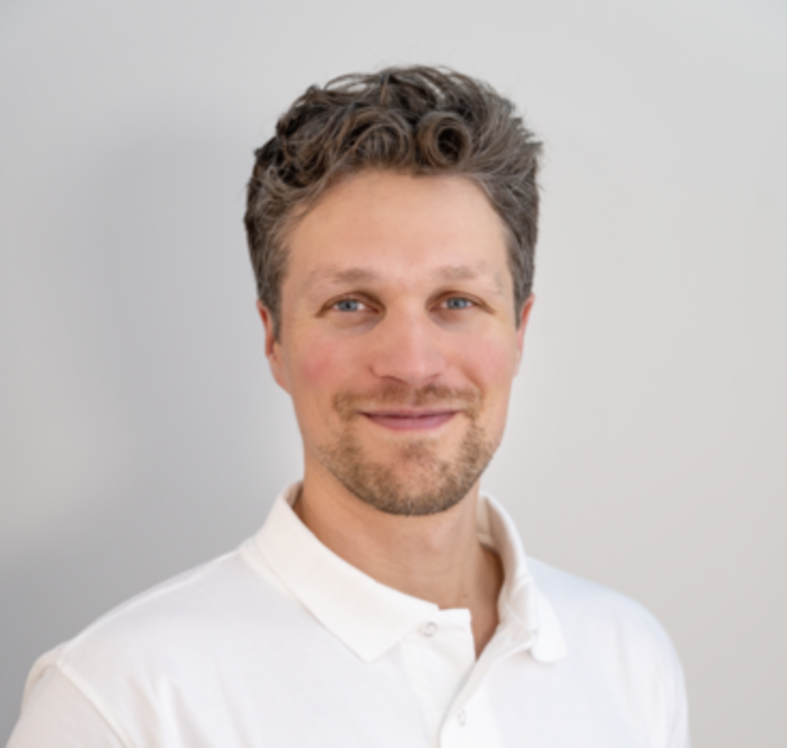
Daniel is a physicist, imaging scientist, and clinical radiologist with
a dedicated focus on machine learning and magnetic resonance imaging.
After studying physics at RWTH Aachen University and Imperial College in
London, he continued to satisfy his thirst for knowledge by studying
medicine at RWTH Aachen University. In 2013, he completed his MD thesis
on the compatibility of positron emission tomography and magnetic
resonance imaging and joined the Department of Diagnostic and
Interventional Radiology (University Hospital Aachen) to become a
board-certified clinical radiologist in 2019. Besides his clinical work,
he pursued his research interests in machine learning as a fellow at the
Institute of Imaging and Computer Vision (RWTH Aachen University) for
two years before returning to the clinic where he currently leads the
interdisciplinary research group “AI in Medical Imaging”. His research
focuses on bringing machine learning-methods into clinical practice and
on bridging the gaps between research possibilities and clinical
applicability.His recent publications are listed on
Google Scholar
and
Pubmed.
Sven Nebelung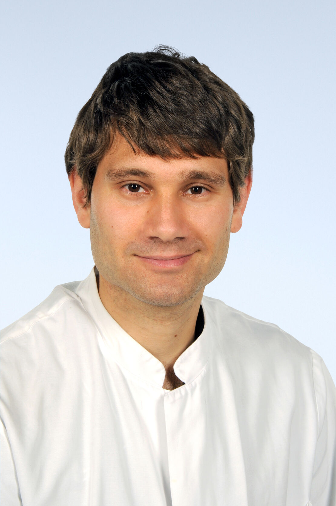
Sven is a clinical radiologist and imaging scientist focusing on
clinically motivated imaging research that aims to refine image
acquisition and post-processing methodologies in close collaboration
with clinicians, clinical scientists, engineers, physicists, and imaging
scientists. After studying medicine at RWTH Aachen University, he
completed his MD thesis on cartilage tissue engineering. He joined the
Department of Orthopedics (University Hospital Aachen) to receive
orthopedic training during the surgical common trunk. After undertaking
research at the Institute of Anatomy (RWTH Aachen University) in 2015,
he entered Radiology specialist training at the Department of Diagnostic
and Interventional Radiology (University Hospital Aachen). After
completing a research stay at the Department of Diagnostic and
Interventional Radiology (University Hospital Düsseldorf) from 2019 to
2021, he moved back to Aachen to lead the group. In 2022, he was
board-certified as a radiologist and has been working as an attending
physician I the Department of Diagnostic and Interventional Radiology
(University Hospital Aachen) ever since, focusing his clinical work on
MRI and musculoskeletal pathologies. His research is generously funded
by the German Research Association (DFG) and funds from RWTH Aachen
University. His recent publications are listed on Google Scholar
and Pubmed. He also regularly reviews manuscripts for medical, technical, and
interdisciplinary scientific journals.
Research Coordinator
Vera Winter
Vera joined the team in January 2024 as research coordinator. She has a
vast experience in the field of research funding and project management
and is passionate about supporting researchers so they can focus on the
science. Before joining our team she was in charge of EU funded research
projects, in particular European Research Council (ERC), at RWTH Aachen
University and worked in project and stakeholder management at the
European Spallation Source in Lund, Sweden. Vera has studied European
Studies, International Relations and Research Management in Maastricht,
Braga, Malmö and Speyer.
PhD Students
Debora Jutz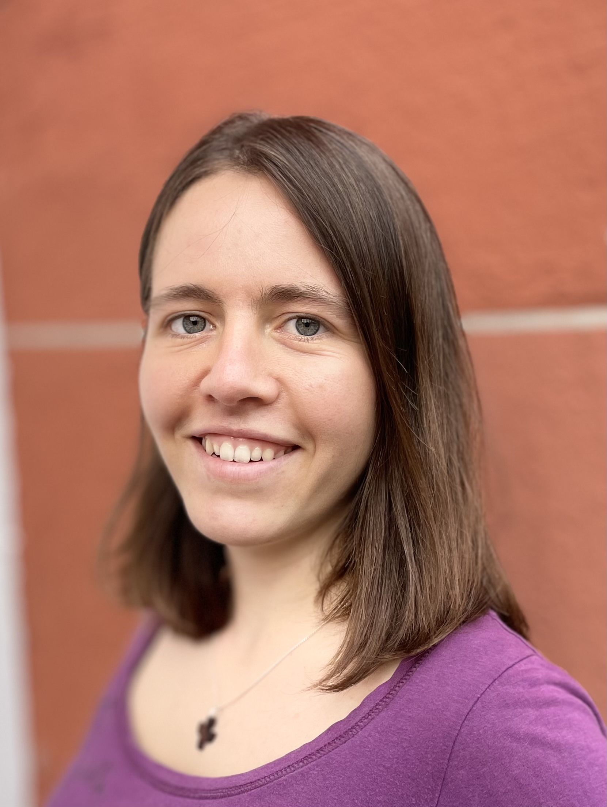
Debora is a medical computer scientist focusing on machine learning
classifying breast magnetic resonance images. She studied medical
computer science at University Heidelberg and Heilbronn University for
the bachelors degree. She continued her academic journey in Tübingen
where she worked as a research assistant in 2022, focusing on
privacy-preserving machine learning techniques. This role allowed her to
deepen her expertise in safeguarding sensitive data during model
training and inference. Debora completed her M.Sc. in medical computer
science from the University of Tübingen in 2023, specializing in
security. Her master's thesis focused on implementing inference on a
privacy-preserving Convolutional Neural Network (CNN) using secure
three-party computation.
Mahta Khoobi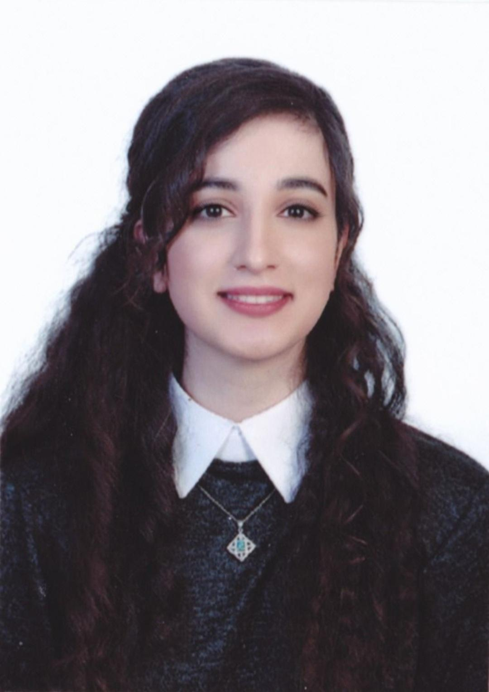
Mahta is a doctoral student at Uniklinik RWTH Aachen, delving into
Machine Learning and Musculoskeletal Imaging since January 2024. She's
on a mission to create user-friendly interfaces for medical experts,
integrating AI models seamlessly while keeping them explainable in
medical contexts. Leveraging open source platforms, she's optimizing
user interaction for efficient AI integration into clinical practice.
Before her doctoral studies, Mahta earned an M.Sc. in Software Systems
Engineering from RWTH Aachen and a B.Sc. in Computer Engineering from
Tehran, Iran. With industrial experience in backend and frontend
development, she's worked on various projects, including financial data
services and banking web apps. Mahta's research interests range from
software engineering for machine learning to user interface design in
medical imaging platforms and MLOps. Outside work, she enjoys fitness,
painting, travel, and continuous learning.
Patrick Wienholt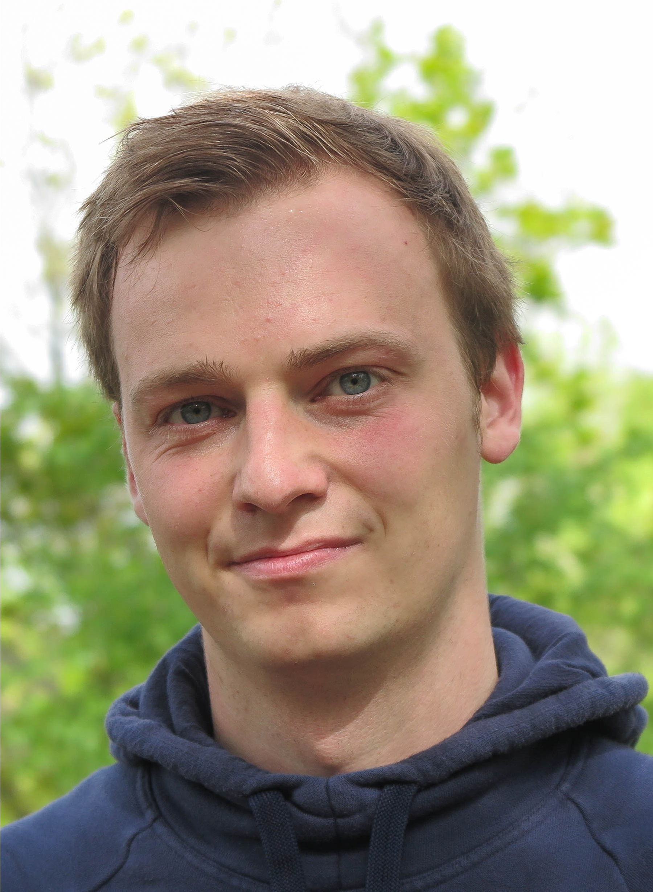
Patrick is a PhD (Dr. rer. medic.) candidate and researcher. He has
studied computer science and received his bachelor's and master's
degrees from RWTH Aachen University. During his studies, he focused on
machine learning with a special emphasis on computer vision. Since the
beginning he took lectures with a focus on medicine and medical
engineering. In his research, he uses his expertise to push medical deep
learning research beyond the current state of the art.
Roman Vuskov
Roman is a passionate PhD Student (Dr. rer. medic) blending his academic
foundation in computer science with a keen interest in medical AI.
Having completed both his master's and bachelor's degrees at RWTHS
Aachen, he has experience in machine learning, data science, and
high-performance computing. His academic journey has been driven by a
fascination with expanding the problem-solving capabilities of
artificial computational systems and extracting valuable insights from
challenging datasets. Presently, he collaborates closely with medical
experts, leveraging established deep-learning techniques to unlock new
clinical insights while conducting research into novel deep-learning
methods for the medical domain.
Simon Westfechtel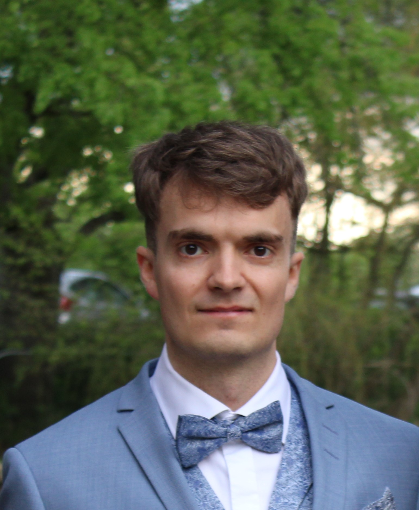
Simon studied Computational Social Systems at RWTH Aachen for his
Master's degree and joined the group in 2021 as a student researcher.
After completing his studies, he became a full-time PhD student and
research fellow in 2023. His work is focused on developing novel methods
for anatomical landmark detection in 3D magnetic resonance imaging and
building AI-aided diagnostic tools for clinical practice.
Postdoctoral Researchers
Alexander Hermans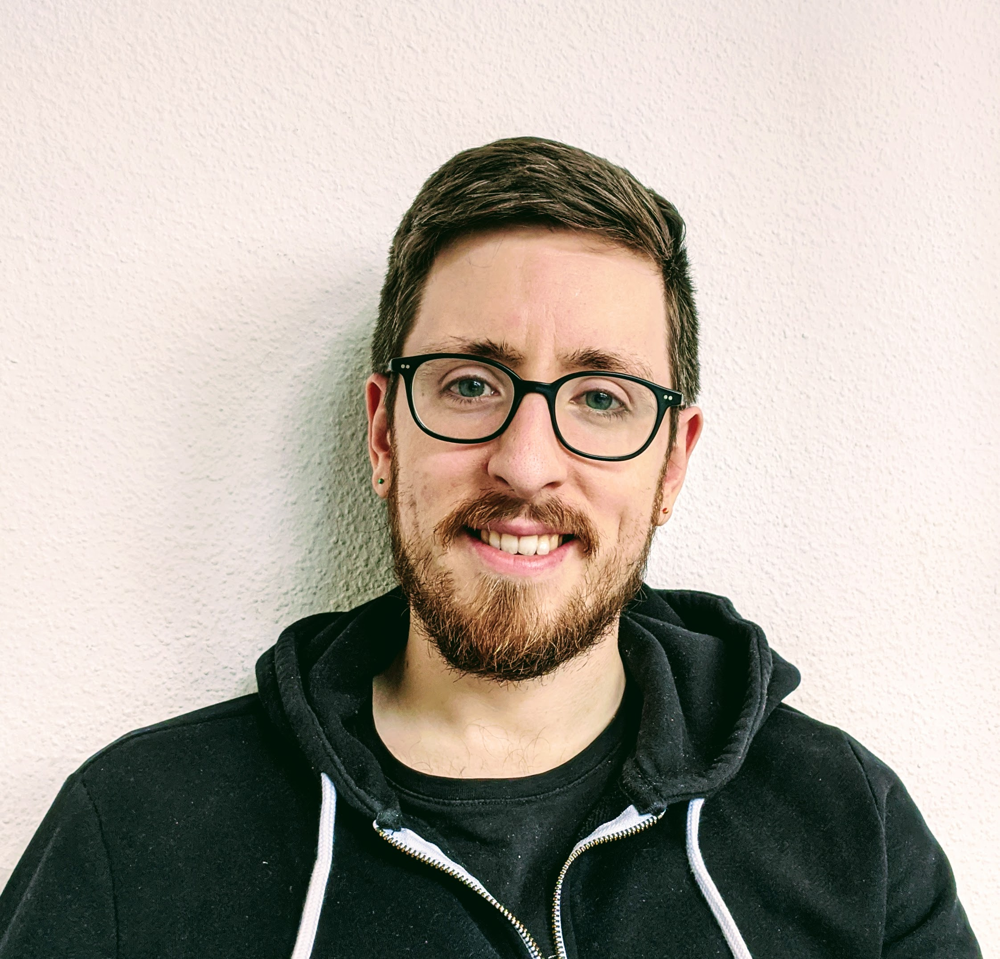
Alexander Hermans holds bachelor, master and PhD degrees in computer
science from RWTH Aachen University. During his PhD at the Computer
Vision group he worked on deep learning based approaches for computer
vision with a strong focus on real-world robotics applications. He
currently serves as a postdoctoral researcher in the Computer Vision
group at RWTH Aachen University, while also contributing to the Machine
Learning and Musculoskeletal Imaging group at the university hospital.
His work focuses on the intersection of computer vision and practical
applications in robotics as well as medical imaging.
Dennis Eschweiler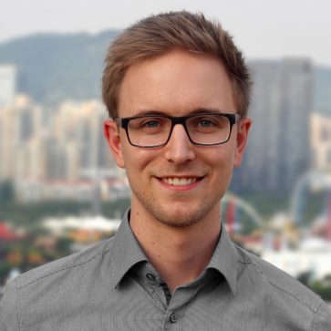
Dennis Eschweiler is a research scientist at the Machine Learning and
Musculoskeletal Imaging group at the RWTH University Hospital. He
received bachelor's and master's degrees in electrical engineering from
RWTH Aachen University in 2015 and 2018, respectively. During his PhD at
the Institute of Imaging and Computer Vision at RWTH Aachen University,
he worked on deep learning-based approaches for segmentation and
generative models for 3D biomedical image data. He joined the group in
2024 and is involved in various projects with the primary goal of
bringing deep learning-based approaches into clinical practice.
Firas Khader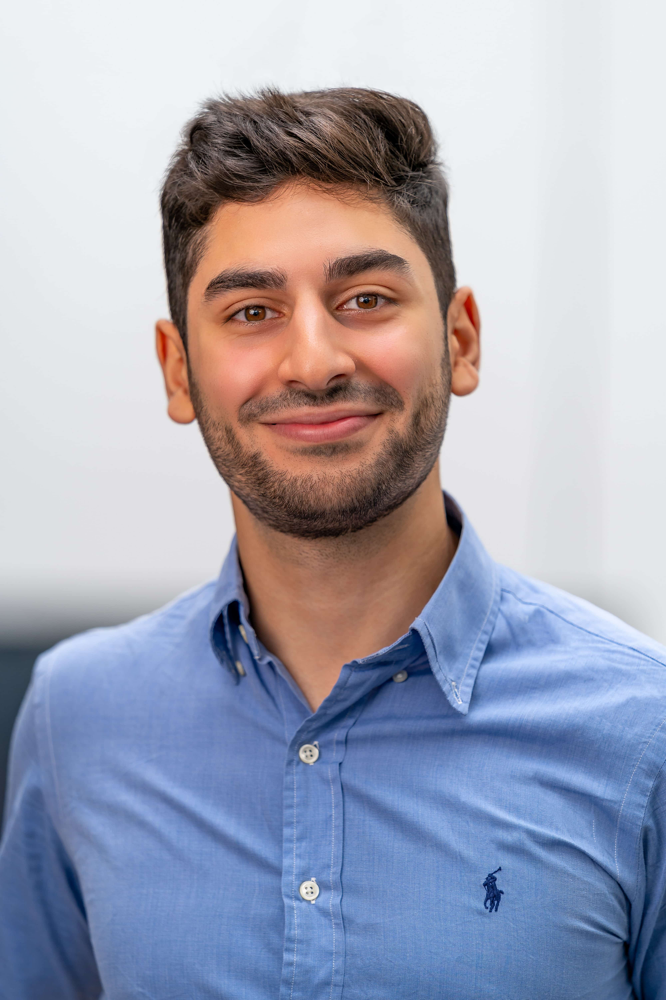
Firas is a Postdoc with a focus on applying machine learning techniques
to medical data. Prior to joining the group in 2020 he received his
bachelor’s degree in Electrical Engineering at Hamburg University of
Technology and his master’s degree at RWTH Aachen University. In his
master thesis he conducted research on deep learning-based behaviour
analysis that was followed up by an internship as a machine
learning-engineer in the industry where he incorporated MRI knee
segmentation algorithms into the workflow of clinical radiologists.
During his PhD, his main focus was on analysing multimodal medical data
(radiology & pathology) using deep learning, as well as working on
generative models for medical imaging. His current focus is on exploring
the capabilities of large-language models on medical data.
Gustav Müller-Franzes
Gustav studied electrical engineering at RWTH Aachen University. He
developed deep learning methods for the classification of breast cancer
when pursuing his bachelor thesis at the Institute of Imaging and
Computer Vision (RWTH Aachen University). Following that, he
investigated the effects of inter-rater segmentation variance on
radiomics features during his master thesis. He joined the team in 2020
and is now a PhD candidate involved in several projects with the primary
goal to establish and validate deep learning methods in clinical
practice. Currently, he is working on machine learning-based
optimization strategies in breast cancer screening, joint MRI post
processing, and other aspects of medicine.
Soroosh Tayebi Arasteh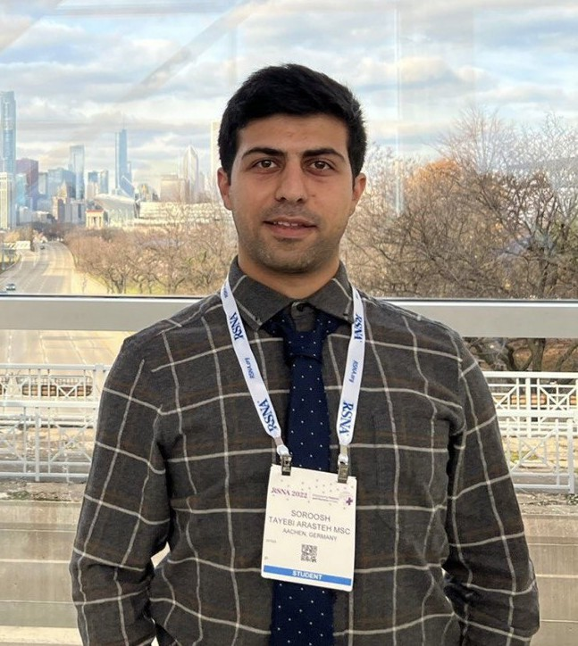
Soroosh is an AI scientist and electrical & computer engineer. He
completed his M.Sc. in signal processing and communications engineering
at the University of Erlangen-Nuremberg (FAU). Keen to delve deeper into
research and innovation, Soroosh embarked on his master's thesis at
Harvard Medical School. He joined the group in 02/2022 for a PhD in AI
in Medical Image Processing from RWTH Aachen University. Currently, he
is a postdoctoral researcher at the group, working on multiple projects
such as privacy-preserving medical deep learning, generative AI, and
multimodal AI. For a more detailed insight, visit his personal website
Here.
Tianyu Han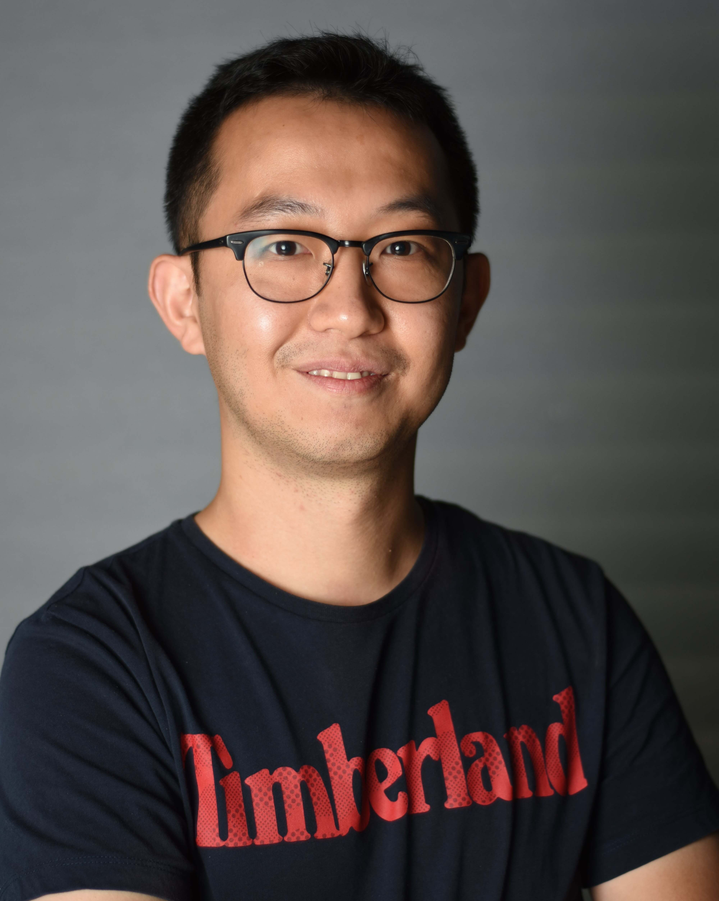
Dr. Tianyu Han is a postdoc researcher at the University Hospital RWTH
Aachen's Department of Diagnostic and Interventional Radiology. With a
PhD in Physics from RWTH Aachen University, his doctoral study explored
generative modeling for medical image analysis, resulting in multiple
high-impact publications in Nature Machine Intelligence, Nature
Communications, Radiology, and Science Advances. Since completing his
PhD, Dr. Han has extended his research to developing and deploying
advanced large language models (LLMs) for medical applications. His
notable contributions include the creation of MedAlpaca, an open-source
medical LLM, and the compilation of Medical Meadow, a substantial
medical dataset designed for LLM training. His research has demonstrated
the practical utility of multimodal LLMs in clinical settings,
contributing to their adoption for general medical image interpretation.
Dr. Han’s work has also led to significant advancements in using
adversarially trained models for pathology detection and the anonymous
sharing of medical data through generative models. His innovative
methodologies have not only enhanced diagnostic accuracies but also
facilitated the understanding of radiological confounders on an
individual level.